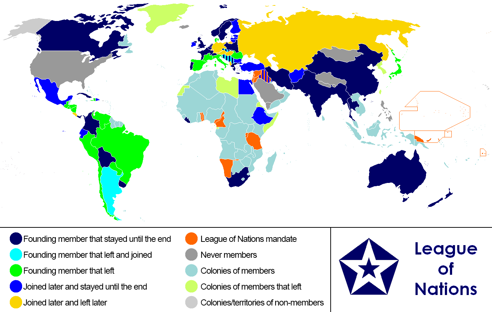
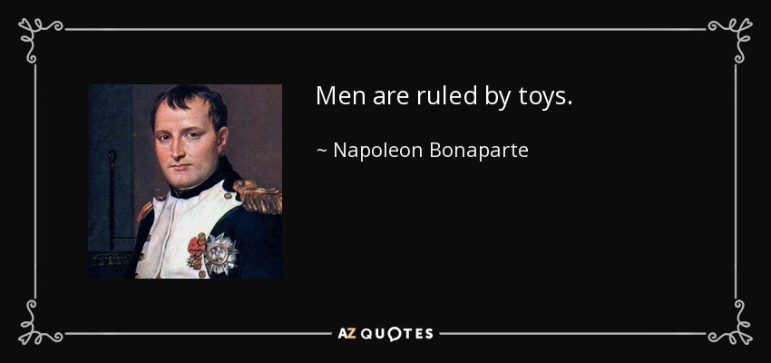

chapter30.1--handout
Background Information
William Gibbs McAdoo
💧小威廉·吉布斯·麦卡杜（William Gibbs McAdoo, Jr.，1863年10月31日－1941年2月1日），美国政治家，美国民主党人，曾任美国财政部长（1913年-1918年）和美国参议院议员（1933年-1938年）。
Secretary of the Treasury
美国财政部秘书长（United States Secretary of the Treasury）是美国财政部的首长，负责财政和金融事务，2003年之前还负责某些国家安全和防卫有关事宜。2003年，财政部的大多数执法机构如美国烟酒枪炮及爆裂物管理局、美国海关和美国特勤局等部门划归新成立的美国国土安全部。美国财政部秘书长是美国总统内阁成员，自比尔·克林顿政府开始，也是美国国家安全委员会成员。美国财政部秘书长在美国总统继任顺序中列第5位。
美国财政部秘书长是美国总统的主要经济顾问，是政府经济和财政政策的关键制定者，负责国内和国际金融、经济和财税政策的阐叙，管理国债，监督财政部执法机关的执法行为等事务，并担任美国政府的财务代理人；且监督财政部制造发行硬币与钞票。
财政部长是美国社会保险基金和美国医疗保险基金的董事会主席，也是国际货币基金组织、国际复兴开发银行、美国国内开发银行、亚洲开发银行和欧洲复兴开发银行中的美国董事。
the League of Nations
国际联盟，简称国联，成立于1920年1月10日，是第一次世界大战结束巴黎和会召开后组成的跨政府组织，也是世界上第一个以维护世界和平为其主要任务的国际组织。

国际联盟的成立目的如《国际联盟盟约》所述，包括通过集体安全及军备控制来预防战争，借由谈判及仲裁来平息国际间的纷争。国际联盟及其他同时期的条约也提到劳动条件、对原住民的公平待遇、人口走私与贩毒、军备交易、公众卫生、战俘待遇，以及保护欧洲的少数族群。1934年9月28日至1935年2月23日期间，国际联盟达到极盛时期，会员国数量高达58个。
peace conference

巴黎和会，1919年1月18日在巴黎凡尔赛宫召开的会议。
1918年11月，第一次世界大战宣告结束。1919年1月，胜利的协约国集团为了解决战争所造成的问题，以及奠定战后的和平，于是召开巴黎和会。这个和会因为战败国和中立国均未获邀请参加，所以这是胜利国举行的和会，而胜利国又有大小之分别，它又是个大国操纵的和会。分别由美国总统威尔逊、英国首相大卫·劳莱·乔治、法国总理克里孟梭主导了和会的进行。
和会上签订了处置战败国德国的凡尔赛和约，同时还分别同德国的盟国奥地利、匈牙利、土耳其等国签订了一系列和约。这些和约和凡尔赛和约一起构成了凡尔赛体系，确立了一次大战后由美国、英国、法国等主要战胜国主导的国际政治格局。会议通过领土分配及赔款等措施重塑现实政治格局，遏制德国等战败国及苏维埃俄国等共产国家，但与此同时通过筹组一个国际联盟来企图建立理想的国际外交规范。
参加巴黎和会的各国代表有1000多人，其中全权代表70人。和会及后续的活动先后完成对各战败国的和约，其中对德和约的凡尔赛条约是最为重要的条约，对日后的国际关系有着深远影响。
Marshals of France
法国元帅是法国的一种军事头衔，由腓力二世（Philippe Auguste）为艾伯里克·克列芒（Albéric Clément）所设。它不同于“maréchal”，这个法语词来源于法兰克日耳曼语“马”和“仆人”。在中世纪的法国和其他一些欧洲国家，“maréchal”是军队中的一般官职，他负责军队的行军队形和作战队形，监督警卫勤务的执行，管理军队庶务以及指挥前卫，选择营地等工作。
在随后的几个世纪，法国元帅成为了国王的重要军事长官，由陆军统帅（connétable）领导。1624年红衣主教黎胥留撤销了陆军统帅的称号，法国元帅就成为了陆军的最高统帅。六位法国元帅被授于法国大元帅(Marshal General of France，maréchal général des camps et armées du roi，国王陛下麾下大元帅）这一高贵的军阶：比隆公爵、莱迪吉耶尔公爵、蒂雷纳、维拉尔、萨克斯和苏尔特。
在法兰西第一帝国期间，元帅被称为“帝国元帅”（maréchal d'Empire）。 在波旁王朝复辟时，这称号恢复为法国元帅，到拿破仑三世保持了下来。
在当代法国，元帅是一种军人的荣誉，不是军队的军阶，是为将军们卓越的成就而赠与他们的。它的标志为7颗星，元帅权杖是一个蓝色圆柱与星（以前是法国王室的标记百合花图案）。
菲利普·贝当，于第一次世界大战因他的将才被授予法国元帅；在他因二战时叛国被审判和监禁以后，以及在他被剥夺其它职务和头衔之后，只保留元帅头衔。
目前法国最后一位被授予元帅的是马里-皮埃尔·柯尼希，1970年去世，1984年追授；最后一位在世被授予元帅的是阿尔方斯·朱安，1952年晋升，1967年去世。
Vocabulary
slaughter
💧kill, putting to death, defeat, licking, murder, slaying
vt. 屠杀, 杀戮; 屠宰
The playwright was slaughtered by the press.
这位剧作家受到新闻界的无情批判。
Wholesale slaughter was carried out in the name of progress.
大规模的屠杀在维护进步的名义下进行。
the lawless slaughter of protected species.
对保护物种的非法捕杀。
emissary
💧 representative，someone sent on a mission to represent the interests of someone else
n. 使者；间谍；密使
We hope that the Spanish people will like them and the lovely pandas, as the goodwill emissary of the Chinese people, can promote the friendly affections between our two peoples.
我们希望西班牙人民能够喜爱他们，希望这对可爱的熊猫作为中国人民友好使者，能够增进两国人民之间的友好感情。
warlord
💧military leader，supreme military leader exercising civil power in a region especially one accountable to nobody when the central government is weak
n. 军阀
名 词: warlordism
the politicians and warlords who are fermenting this chaos.
挑起这场混乱的政客和军阀。
mountain warlords carried the torch of Greek independence.
山里的军阀们举着希腊独立精神的火炬。
snub
💧an instance of driving away or warding off
💧a refusal to recognize someone you know
vt. 冷落；严厉斥责；掐灭
the move was a snub to the government.
这次举动是对政府的有意冷落。
His cancellation of the concert was seen as a deliberate snub to the organizers.
他取消了演唱会，这被认为是对主办者的刻意抵制。
Crush Your Problems
- "I replied that the President thought it would be unwise for anyone to do this officially, and that his going would attract a great deal of attention and people would wonder why he was there. ..."
💧it would be unwise for sb. to do sth. officially. 正式这么做的话是不明智的。
这个句子结构可以灵活运用在各种场景中，比如：
It would be unwise for you to drop that class officially, for it will make it impossible for you to get into the trouble of not getting an acceptable GPA to graduate.
💧attract a great deal of attention 吸引很多人注意
这句话就是体现House情商爆表的地方啦～他给对方暗示了Wilson不想让太重要的人去做这件事情，所以自然是会给对方一个很好的感受啦～ - He snubbed the Republicans, refused to let them feel that the League was their idea as well as his, refused to let them have a finger in the pie; and, as a result of this crude handling of human relations, wrecked his own career, ruined his health, shortened his life, caused America to stay out of the League, and altered the history of the world.
💧have a finger in the pie 不是说pie里有一只手指哇（SweeneyTodd既视感...）
是说，不让别人染指，不让别人分这块儿蛋糕。
这里说的就是，Wilson不明智的地方就在于，他不让Republicans干涉这件事情，不让别人分蛋糕，最后的结果（as a result），他毁掉了自己的职业生涯、自己的健康、使得美国独立在国联之外，也改变了世界历史的格局。
再给大家分享两个例句哈：
You have to bear a share of the responsibility if you want to have a finger in the pie.
如果你要参与此事的话，你一定要承担一份责任。
Sally is always eager to have a finger in the pie if her neighbors are planning any little festivity.
邻居们的喜庆活动，哪怕再小，萨利也总想插一手。
- She tried criticism. She tried coaxing. Neither worked. Then she tried giving the worst sinner in the gang a title and a feeling of authority. She made him her "detective" and put him in charge of keeping all trespassers off her lawn.
💧她试过criticism和coaxing，都不起作用，之后她试着去给最坏的小罪犯一点点权利。她让他成为她的小侦探，让他把所有入侵者赶出她的草坪。
💧这部分看起来比较绕，但是结构很简单make sb sth 这种双宾语的形式。具体怎么判断双宾语这种玄学的概念，而不是宾语和宾语补足语呢？
很简单，双宾语是两个并列的名词，比如made him president，让他成为了总统，他和总统之间是“是”的关系，所以president是补充him的；而give me some admiration，我“不是”admiration，所以这个是双宾语。
（不过这个只是一个概念性的意思而已，不要纠结语法概念，要多了解他的用法吼～）
Content Analysis
一九一五年，美国举国震惊于欧洲各国彼此残杀的事情；可是，Wilson总统决心要为这世界和平而努力，他要派一个和平大使，去和欧洲那些军阀们会商。（to counsel with the warlords of Europe.）
当时国务卿Bryan，是主张和平最有力的人，他希望为这件事奔走。他看出这是个让他名垂后世的伟大任务（He saw a chance to perform a great service and make his name immortal）。可是Wilson总统却派了Bryan的好友House上校，如果House把这件事告诉Bryan，还不能惹他生气是蛮困难的。但是House机智的暗示Bryan，这件事情不能让Bryan这么大的腕儿去做，Bryan自然满意了。
机警的House上校，他做到了人与人之间关系中，一项重要的规则，那是：“永远使人们乐意去做你所建议的事。“
（Always make the other person happy about doing the thing you suggest.）
Wilson请McAdoo做他的阁员时，也运用了这项规则，Wilson总统说他正在组织内阁，如果McAdoo答应担任财政部长一职，会使Wilson非常高兴，仿佛McAdoo接受这项荣誉，就好像帮了他一个大忙一样。
（he created the impression that by accepting this great honor I would be doing him a favor.）
可是不幸的，威尔逊总统没有永远运用那一种手腕，如果他运用了的话，历史的演变，或许跟现在就不一样了。比如美国加入国联的事情，他并没有获得议院和共和党的赞同。他冷落了共和党，不使他们觉得创办国联是他们的意见；威尔逊粗率的处置，摧毁了他自己的事业、损害了他的健康，甚至影响到他的寿命。使美国始终未加入，并且改变了以后世界的历史。
（refused to let them have a finger in the pie; and, as a result of this crude handling of human relations, wrecked his own career, ruined his health, shortened his life, caused America to stay out of the League, and altered the history of the world.）
拿破仑训练荣誉军（Legion of Honor）时，发出一千五百枚十字徽章给他的士兵，封他的十八位将军为“法国大将”，称他的军队为“伟大的军队”的时候，人们也说他“孩子气”，讥笑他拿玩具给那些出生入死的老军人。拿破仑回答说：“是的，有时人就是受玩具所统治。”（"Men are ruled by toys."）

这种以名衔、或权威赠予的方法，对拿破仑有效，对我们同样有效。比如 Mrs. Ernest Gent，她家的草地常被顽皮的小孩踩坏，她对那些孩子劝告、吓唬都不管用。（She tried criticism. She tried coaxing. Neither worked. ）终于她想出个办法， 她从他们之间，找出一个最坏的孩子，并给他一个头衔，使他有一种权威感。作为她的侦探，这个小孩专门侦察那些侵入她草地的孩子们，她这个办法果然有效。那个小孩后来甚至在后面院子燃起一堆火，把铁棍烧红去吓其他孩子。
（Her "detective" built a bonfire in the backyard, heated an iron red hot, and threatened to brand any boy who stepped on the lawn.）
这就是人类的天性。
所以想要做一个好的leader，你需要：
The effective leader should keep the following guidelines in mind
when it is necessary to change attitudes or behavior:
- 诚信，绝不过度承诺
Be sincere. Do not promise anything that you cannot deliver. - 确切地知道你希望别人做什么
Know exactly what it is you want the other person to do. - 有同理心
Be empathetic. Ask yourself what is it the other person really
wants. - 考虑对方接受你的建议会有的收益
Consider the benefits that person will receive from doing what you suggest. - 将这些收益，和对方想要的东西做匹配
Match those benefits to the other person's wants. - 提出要求的时候，以一个让别人感到受益的方式沟通
When you make your request, put it in a form that will convey to
the other person the idea that he personally will benefit.
Today's Bonus
今天卡叔的第一本书就读完啦～明天开始我们将进入How to Stop Worrying and Start Living的阅读，这本书的最后一个章节，卡叔重点分析了领导力，今天的彩蛋，给大家总结一下leadership吧～
💧领导力Leadership，是个人或是组织带领其他个人、团队或是整个组织的能力，是社会学中的一个研究领域，也是实务技能。
美国学术界定义领导为“一个社会影响的过程，其中一个人可以得到其他人的协助以及同侪支持，以完成一个共同的任务”。
（ "a process of social influence in which a person can enlist the aid and support of others in the accomplishment of a common task".）
欧洲（以及一些非学术）的观点认为领导力不只是借着有共同目标来进行，其中也包寻求个人权力。
领导力研究的相关理论有包括领导的特质、情境交互作用、机能、行为、权力、愿景及价值、魅力、智能等。
💧Leadership styles
领导力的几种风格
👉Autocratic or authoritarian
autocratic leadership style, 是所有的决策权都在leader自己手里，这类Leader不太接受下属的创意和建议。这种管理方式成功的原因在于可以使领导者自我驱动力很强，决策周期短，一个人可以承担决策的风险和成本，其他人负责执行。
(Autocratic leaders do not entertain any suggestions or initiatives from subordinates.The autocratic management has been successful as it provides strong motivation to the manager. )
👉Participative or democratic
民主化管理
The democratic leadership style 是构成团队的整体成员共同讨论，民主化做决策，追求平等享有决策的参与权，相对于扁平化管理。同样也被称作shared leadership.
(The democratic leadership style consists of the leader sharing the decision-making abilities with group members by promoting the interests of the group members and by practicing social equality.)
👉Laissez-faire or Free-rein
放权式管理
In Laissez-faire or free-rein leadership，是决策过程全权下放，下属享有绝对完整的权力做决策，包括制定目标，和制定问题的解决方案。（decision-making is passed on to the sub-ordinates. The sub-ordinates are given complete right and power to make decisions to establish goals and work out the problems.）
👉Task-oriented and relationship-oriented
任务导向型管理和关系导向型管理
Task-oriented leadership任务导向型管理，这种管理模式下，领导者专注于需要完成的任务
（the leader is focused on the tasks that need to be performed in order to meet a certain production goal.）任务导向管理更看重过程管控和目标结果导向。
（ Task-oriented leaders are generally more concerned with producing a step-by-step solution for given problem or goal）
Relationship-oriented leadership关系导向型管理，更看重团队成员之间的协作关系，以及成员的满意度。
（the leader is more focused on the relationships amongst the group and is generally more concerned with the overall well-being and satisfaction of group members.）
这类型的领导者更看重团队成员间的交流和协作，并对工作结果给予正向激励。
（Relationship-oriented leaders emphasize communication within the group, show trust and confidence in group members, and show appreciation for work done.）
smart word
Make the other person happy about doing the thing you suggest.
让别人开心的接受自己，是一件很有价值的事情，希望你也和我一样，从卡叔身上受益良多。